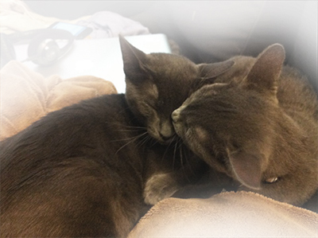
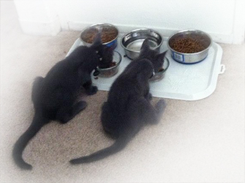
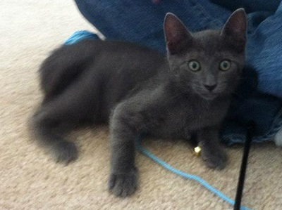

The Adventures of Cloudy and Skye
Cloudy and Skye were found under the dumpster in a Target parking lot when they were only a few months old. They did not have a mommy or daddy, but they had each other!

Kitten's Adventure To a New Home
When Skye and Cloudy were first brought to their new home they were very scared. This place was new to them, so they hid in the darkest place they could find. The space under the bed was a lot like the space they knew under the dumpster, but there were these strange humans that kept putting their heads underneath to look at them. These humans carried a lot of yarn which seemed fun to play with. They gave them food and eventually Skye and Cloudy came out to eat together.

The kittens began to explore their new environment.


Cloudy knew this was now his home and he surrendered his fear.

Do Skye and Cloudy have more adventures?
Find out what other strange adventures Cloudy and Skye share!
Kittens Go To The Bay
Kittens in Costumes
More Information on Cloudy and Skye
Cloudy and Skye were adopted from a shelter when they were only 4 months old. They have grown up so much since then, but are still inseperable! Some of the reasons their mommy and daddy love them so much are:
- Cloudy and Skye are both incredibly cuddly and loving.
- Cloudy cuddles in bed at night.
- Skye is a lap cat and loves cuddling on the couch.
- Cloudy is a great big brother and is very protective of Skye.
- Skye loves her wet food. Cloudy will let her eat first before he gets some of the scraps. That's okay though because Cloudy likes the dry food more.
- Skye and Cloudy love to play fight. They always have each other to play with, giving their mommy and daddy hours of entertainment.
- Skye is helping Cloudy get over his addiction to catnip.
Cloudy and Skye are adorable gray cats. Gray in cat lingo is Blue, which is how their breed got the name "Russian Blue." For more information on Russian Blues, visit Cat Fanciers' Association.